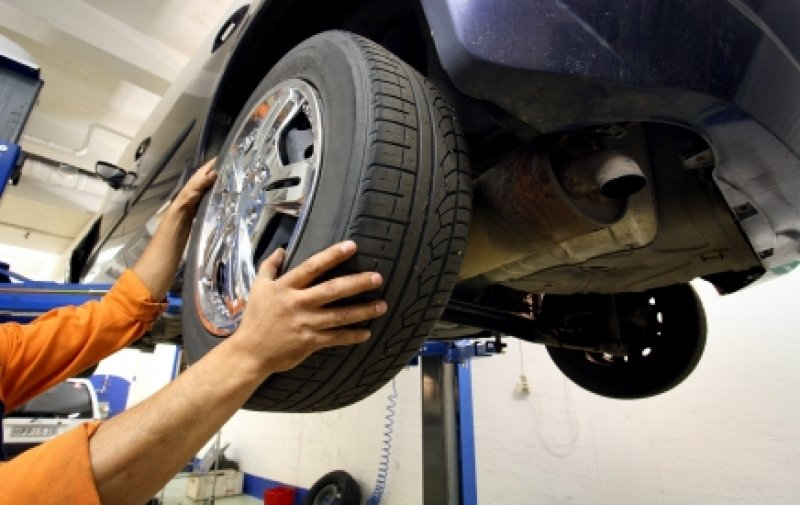

STIMATE CLIENT!!!
ACEASTA NU ESTE DOAR O RECLAMA !!!
ESTE O CERTITUDINE,PUTETI SA VERIFICATI! OFERIM GARANTIE LA LUCRARE,PROMPTITUDINE SI CORECTITUDINE.
IN CAZ DE NEMULTUMIRE C-VALOAREA MANOPEREI SE RETURNEAZA!!!
SUPEROFERTA!!!daca in termen de 5 zile lucratoare ,dupa finalizarea reparatiei,aduceti doi clienti noi,vi se returneaza 20%din pretul manoperei!!!!!
OFERTA VALABILA DOAR PTR PERSOANE FIZICE!!!
Dotarile tehnice si personalul service-ului nostru permit realizarea de interventii la sistemele de propulsie, de transmisie, de alimentare, de suspensie, de directie si de franare.
Motor si cutia de viteze
Schimbari de garnituri de chiuloasa, capac tacheti, baie de ulei, reparatii cutie de viteze pentru tractiune 2×4 sau 4×4, cutie de viteza automata sau pozitionata transversal, schimbari de cabluri ambreiaj, kilometraj, acceleratie; curatire si reparatie turbosuflante, injectoare, supape etc.
IMPORTANT: REPARAM SI CUTII DE VITEZE AUTOMATE!
Sistem de evacuare
Montaj toba finala, toba intermediara sau primara, montaj linie completa cu catalizator, montaj sonda Lambda.
Ambreiaj
Montare ambreiaj pentru motoare dispuse longitudinal sau transversal, tractiune fata sau spate, montaj cilindru receptor ambreiaj, montaj pompa ambreiaj.
Sistem franare
Montaj placute de frana, discuri frana, saboti, tamburi, cilindrii receptori frana, etriere, racorduri flexibile, cabluri de frana, schimb lichid de frana.
Suspensii, articulatii, transmisie
Montare amortizoare, capete de bara, bielete de directie, pivoti, brate suspensie, bascule, bucse bascula, bara stabilizatoare, rulmenti cu butuc, tambur, disc.
Transmisie
Montaj axa planetara cu articulatie, numai cap planetara cu manson, arbore cardanic.
Sistem alimentare
Montaj pompe combustibil in rezervor sau in exteriorul rezervorului, monaj rezervoare de combustibil.
Sistem de racire motor
Inlocuire/reparare/montaj pompa de apa, inlocuire termostat, termocupla ventilator, sonda de temperatura, radiatoare.
Elemente de directie
Montaj/inlocuire caseta de directie cu sau fara servo, semicaseta de directie, pompa servodirectie.
Mecanism de distributie
Inlocuirea intregului mecanism de distributie sau numai a anumitor componente (curele, role intinzatoare, ghidaje).